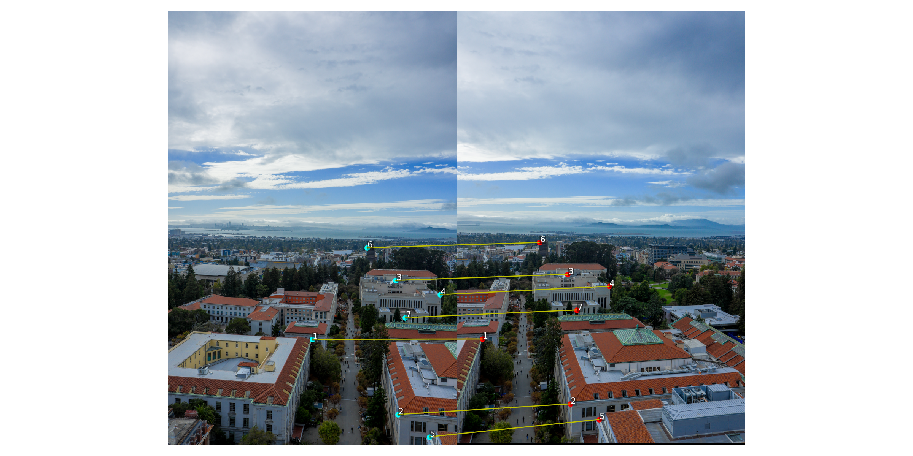
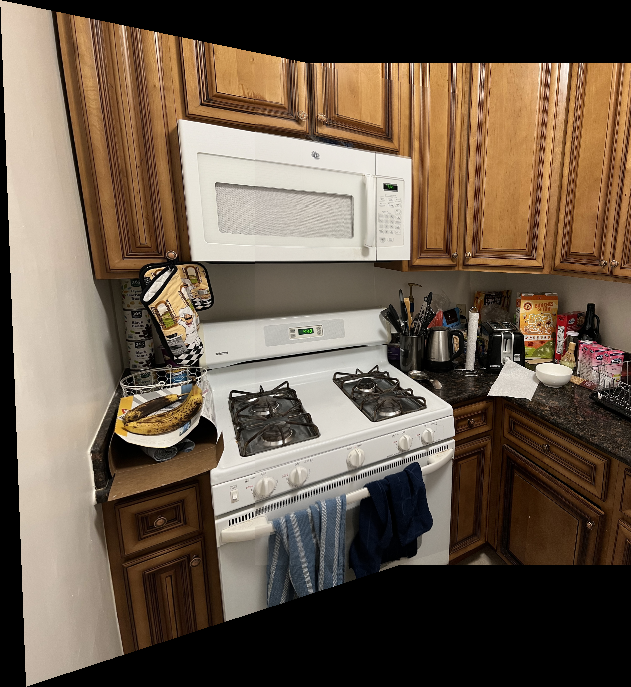
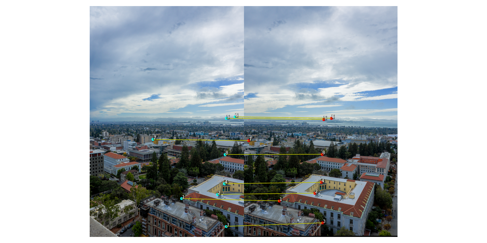
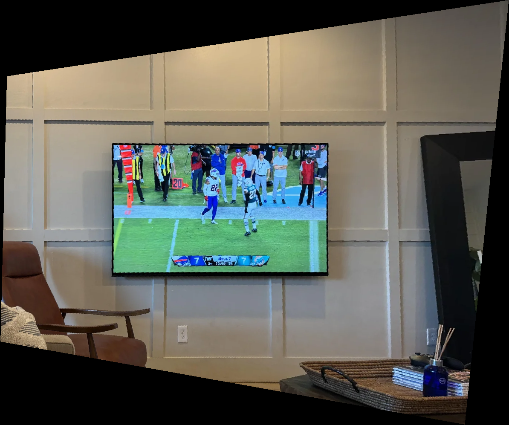
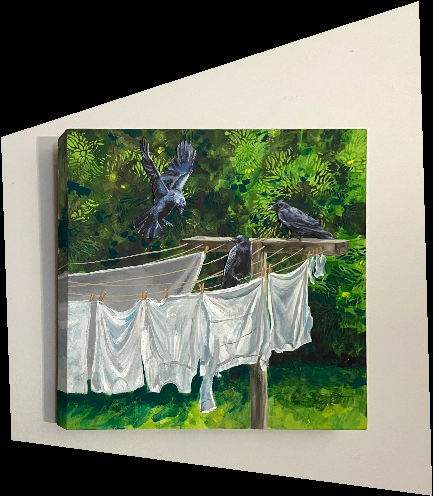
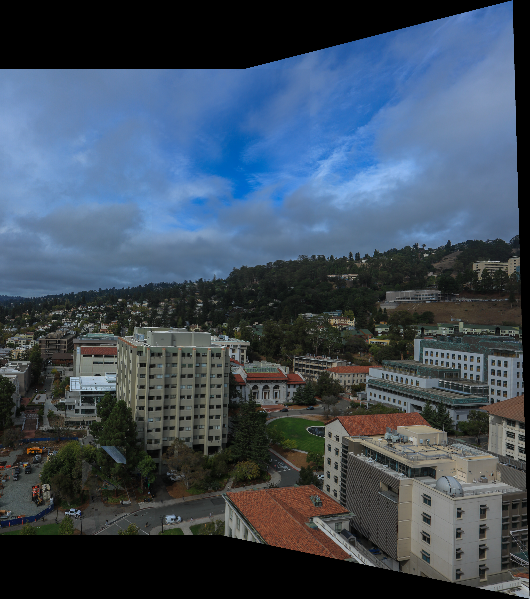

Overview
In this project I implement homography estimation and inverse warping from scratch and use them to rectifiy images and build panoramas. I recover homographies via DLT + least squares, implement nearest-neighbor and bilinear resampling, and blend registered images with feathered alpha masks to form mosaics.
- Languages/libs: Python, NumPy, Matplotlib, OpenCV (for IO/resize only)
- Core functions:
computeH,warpImageNearestNeighbor,warpImageBilinear - Not used:
cv2.findHomography,cv2.warpPerspective,skimage.transform.warp
A.1 — Image Sets (Fixed COP)
I shot multiple overlapping photos by rotating in place (fixed center of projection). Below are two example sets used throughout the report.


A.2 — Recovering Homographies (computeH)
I estimate the 3×3 projective transform p' ~ H p using the Direct Linear
Transform (DLT) with >4 point correspondences and solve the overdetermined system via
least squares (SVD). I also apply isotropic point normalization to improve conditioning.
Correspondences were clicked with Pixspy and saved to CSVs as rows
xi, yi, x'i, y'i.

Implementation Notes
- DLT rows: each correspondence contributes two rows to A (x,y → x′,y′),
solving for 8 dof (scale fixed by
H[2,2]=1). - Normalization: translate to zero mean and scale so mean distance √2; denormalize after SVD.
- Robustness: with >4 points I solve in least squares; outlier rows can be commented in CSV with
#.
A.3 — Inverse Warping + Interpolation
I implemented inverse mapping samplers with two interpolants: nearest neighbor (fast, blocky) and bilinear (smoother). I predict the output canvas by transforming the 4 corners through H and use an alpha mask for valid samples.


Nearest vs Bilinear
Nearest neighbor is very fast but introduces jaggies and aliasing in oblique views. Bilinear is ~2–3× slower but greatly reduces stair-stepping and produces smoother, more faithful rectifications — I use it for the final mosaics.
A.4 — Image Mosaics (Blending)
After chaining homographies to a middle “anchor” frame, I warp all images into that reference and blend them by feathered alpha (center-weighted falloff to zero at image borders). This reduces hard seams while keeping detail where overlaps agree.


Procedure & Notes
- Middle anchor: chaining to the center frame keeps outer warps from “blowing up”.
- Alpha feather: per-image weights peak at the center and decay to 0 at edges.
- Debugging aids: bbox prints for each warped frame and reprojection error per pair to catch bad clicks.
Takeaways
- DLT + normalization gives stable homographies from hand-clicked points.
- Inverse warping with bilinear interpolation is the sweet spot for quality vs speed.
- Feathered alpha blending hides seams when registration is good; poor clicks → ghosting.
- For very wide FOVs, cylindrical warps would further reduce distortions (not required here).